pacman::p_load(tidyverse, tidymodels, data.table, gt, knitr,
skimr, ggcorrplot, themis, solitude)제25회 ADP 실기
1번
1-1번
F(소비자별 구매빈도), M(소비자별 총 구매액) feature를 새로 생성해서 그 결과값으로 탐색적 분석 실시하라.
FF(소비자별 구매빈도)와 MM(소비자별 총 구매액) 변수를 생성하고 탐색적 분석을 실시한다. 현데이터는 1개 거래 건수가 하나의 관측치지만, 소비자별 구매빈도와 총 구매액의 특성 분석에는 1명 소비자가 분석 단위가 되므로 이를 전처리 단계에서 적용한다.
db_1a <- fread("test/25/problem1.csv") %>%
group_by(CustomerID) %>%
mutate(FF = n(), # 소비자별 거래 개수(구매빈도)
MM = sum(Quantity * UnitPrice) # 소비자별 총 구매액
) %>%
ungroup() %>%
unique(by = "CustomerID")
db_1a %>%
select(FF, MM) %>%
skim()| Name | Piped data |
| Number of rows | 40956 |
| Number of columns | 2 |
| _______________________ | |
| Column type frequency: | |
| numeric | 2 |
| ________________________ | |
| Group variables | None |
Variable type: numeric
| skim_variable | n_missing | complete_rate | mean | sd | p0 | p25 | p50 | p75 | p100 | hist |
|---|---|---|---|---|---|---|---|---|---|---|
| FF | 0 | 1 | 1180.06 | 1995.09 | 1 | 107.00 | 264.00 | 646.00 | 5903 | ▇▁▁▁▂ |
| MM | 0 | 1 | 43300.99 | 73489.97 | -1126 | 2283.63 | 5154.58 | 18793.41 | 279489 | ▇▁▂▁▁ |
두 변수 모두 결측치는 존재하지 않지만 구매액(MM)이 음수인 경우는 존재할 수 없으므로 이를 먼저 제거한다.
db_1b <- db_1a %>%
filter(MM > 0)1-2번
F, M feature 기반으로 군집분석 실시, 필요시 이상값 보정하라.
대표적인 k-means 클러스터링으로 군집분석을 실시한다. 먼저 현 데이터로 최적의 군집 개수를 구해보고, 군집분석 후 시각화해본다.
factoextra::fviz_nbclust(db_1b %>% select(FF, MM), kmeans)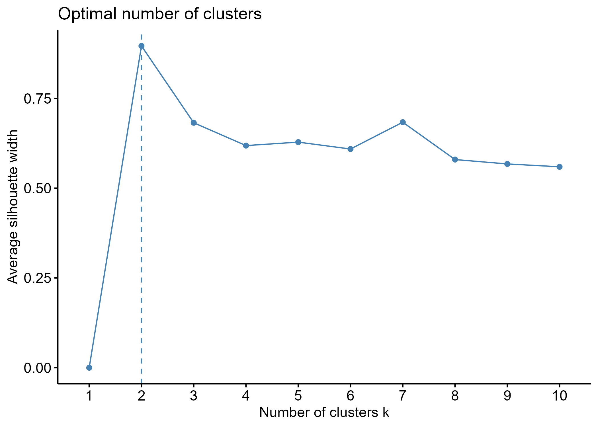
fit_1a <- kmeans(db_1b %>% select(FF, MM), 2)
factoextra::fviz_cluster(fit_1a, db_1b %>% select(FF, MM))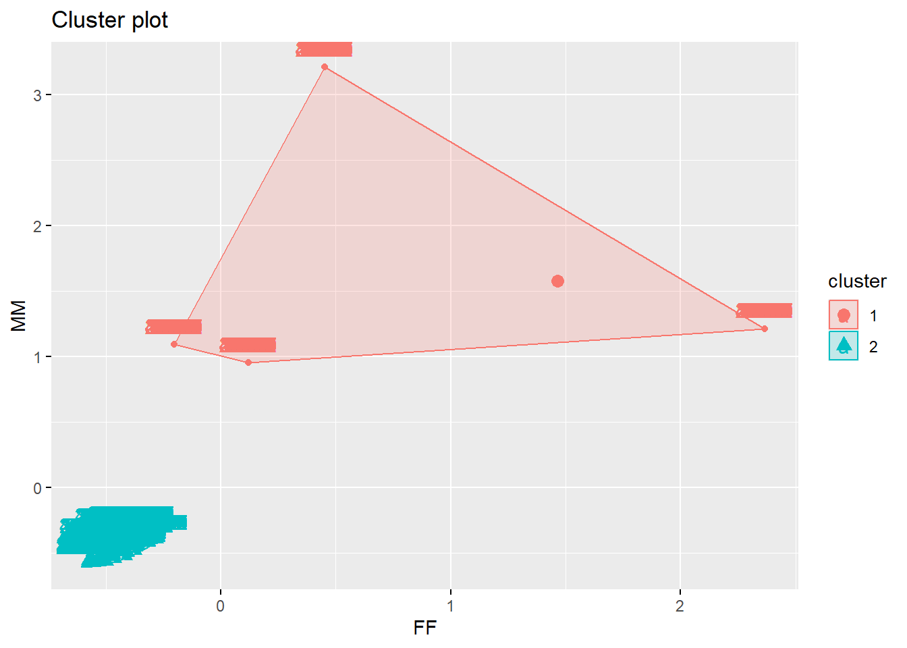
시각화를 해보니 두 변수의 이상치, 특히 MM과 FF 모두 큰 변수가 존재하여 적절한 군집분석이 되지 않는 것으로 판단된다. 두 변수의 box-plot을 그려서 이상치를 확인해본다.
db_1b %>% select(FF, MM) %>% pivot_longer(everything()) %>%
ggplot(aes(y = value)) +
geom_boxplot() +
facet_grid(.~name, scales = "free")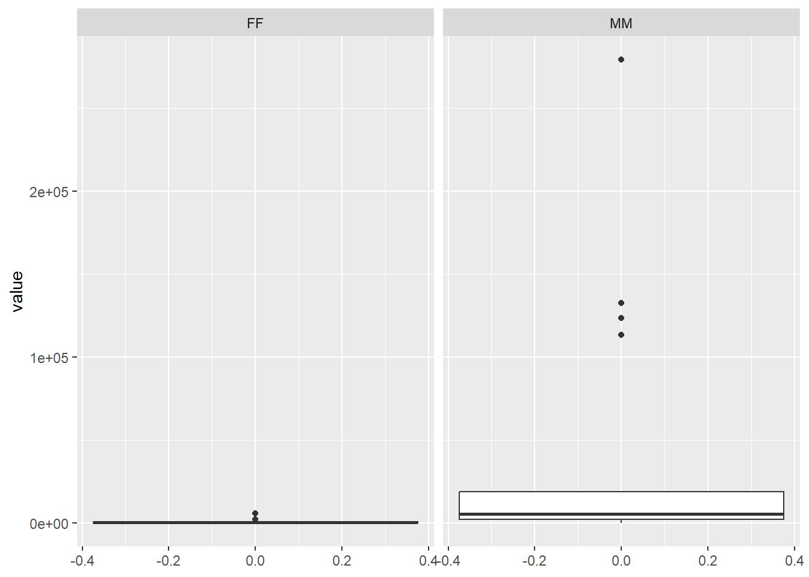
이상치를 제거하는 방법 중 사분위법을 활용하여 제거하고 두 변수의 산점도를 확인해본다.
db_1c <- db_1b %>%
mutate(ID = row_number())
list_ID <- db_1c %>%
select(ID, MM, FF) %>%
pivot_longer(cols = c(MM, FF)) %>%
group_by(name) %>%
mutate(IQR = quantile(value, 0.75) - quantile(value, 0.25), # 상자 길이
bound_lower = quantile(value, 0.25) - (IQR * 1.5),
bound_upper = quantile(value, 0.75) + (IQR * 1.5)) %>%
ungroup() %>%
filter(between(value, bound_lower, bound_upper)) %>%
select(ID) %>% pull()
db_1d <- db_1c %>%
filter(ID %in% unique(list_ID))
plot(db_1d$MM, db_1d$FF)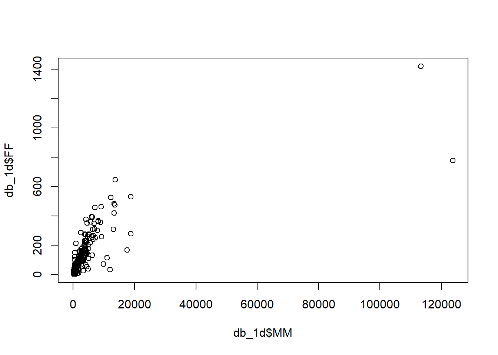
MM 변수가 큰 경우 2개가 이상치로 간주되어 MM은 3만 이하로 다시 필터를 해준다.
db_1f <- db_1d %>%
filter(MM < 30000)
plot(db_1f$MM, db_1f$FF)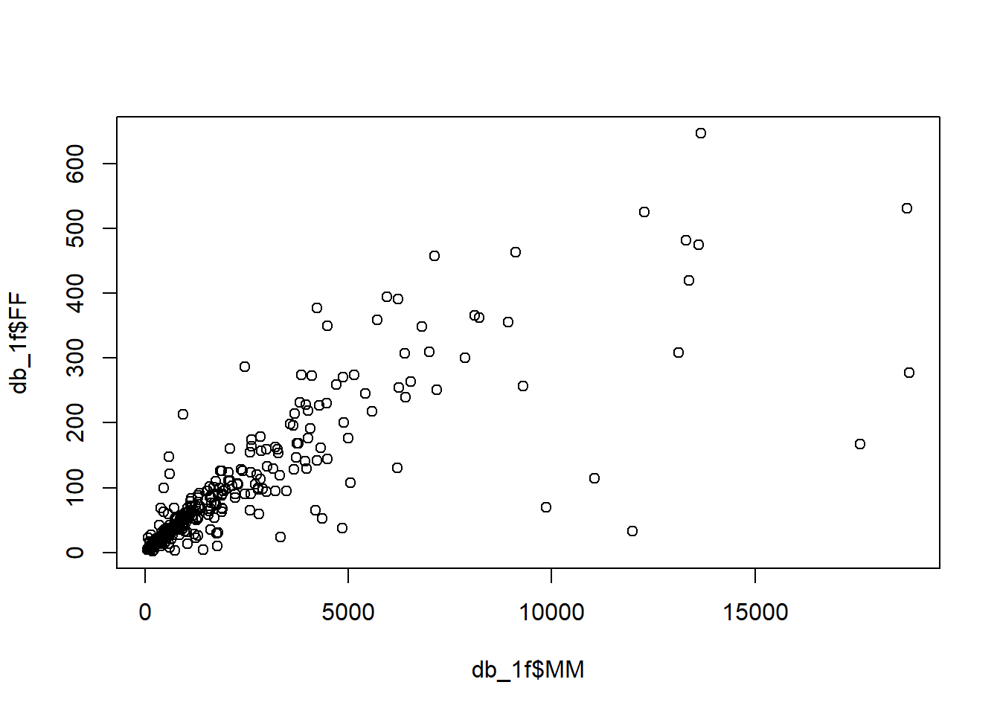
다시 kmeans 클러스터링을 해준다.
factoextra::fviz_nbclust(db_1f %>% select(FF, MM), kmeans)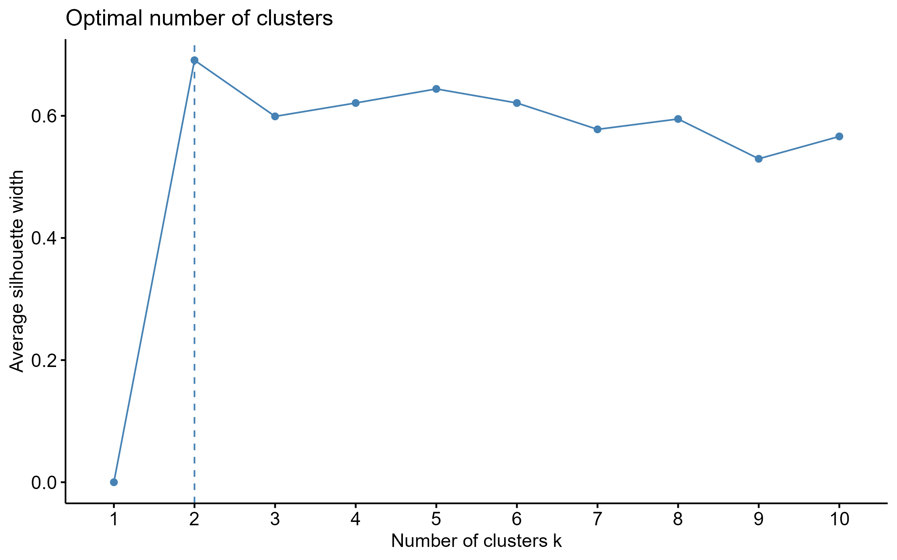
fit_2a <- kmeans(db_1f %>% select(FF, MM), 2)
factoextra::fviz_cluster(fit_2a, db_1f %>% select(FF, MM))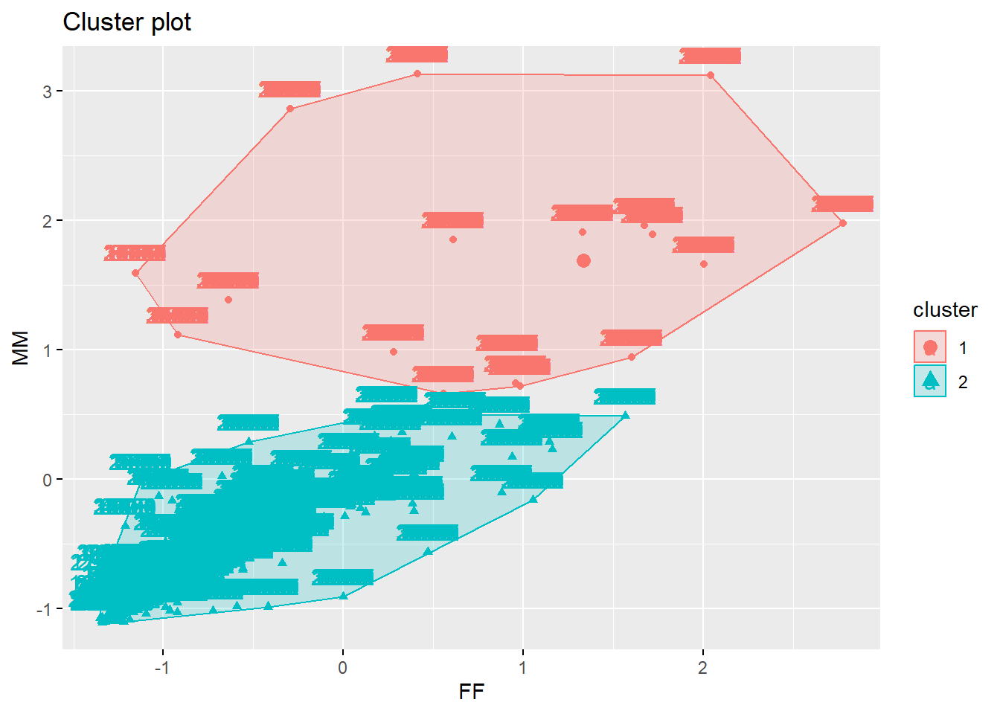
1-3번
군집 결과의 적합성을 군집 내 응집도, 군집 간 분리도의 개념을 사용해서 서술하라.
응집도는 군집 내 데이터 포인트가 얼마나 가까운지, 분리도는 서로 다른 군집 간 포인트가 얼마나 멀리 떨어져 있는지를 측정한다.
1-4번
적합된 군집 별 특성에 대한 의견과 비즈니스적 판단 제시하라.
2번
각 raw는 관광지 A의 1990년 1월 부터 25년동안의 매달 평균 이용객 숫자다.
2-1번
2-1 EDA와 시각화를 진행하라.
데이터를 불러오고 탐색해본다.
db_2a <- fread("test/25/problem2.csv")
db_2a %>% skim()| Name | Piped data |
| Number of rows | 300 |
| Number of columns | 2 |
| Key | NULL |
| _______________________ | |
| Column type frequency: | |
| numeric | 2 |
| ________________________ | |
| Group variables | None |
Variable type: numeric
| skim_variable | n_missing | complete_rate | mean | sd | p0 | p25 | p50 | p75 | p100 | hist |
|---|---|---|---|---|---|---|---|---|---|---|
| V1 | 0 | 1.00 | 149.50 | 86.75 | 0.0 | 74.75 | 149.5 | 224.25 | 299.0 | ▇▇▇▇▇ |
| counts | 5 | 0.98 | 498.68 | 97.60 | 239.4 | 432.60 | 499.8 | 565.55 | 729.2 | ▁▅▇▅▂ |
데이터는 300개 관측치와 1개의 시간을 나타내는 열인 V1, 매달 평균 이용객 숫자 열인 counts로 구성된다. 여기서 counts에는 5개의 결측치가 존재한다.
전처리하지 않은 원데이터를 시각화하면 다음과 같다.
db_2a %>% ggplot(aes(x = V1, y = counts, group = 1)) +
geom_line() +
scale_x_continuous(breaks = seq(0, max(db_2a$V1), 10)) +
theme_bw()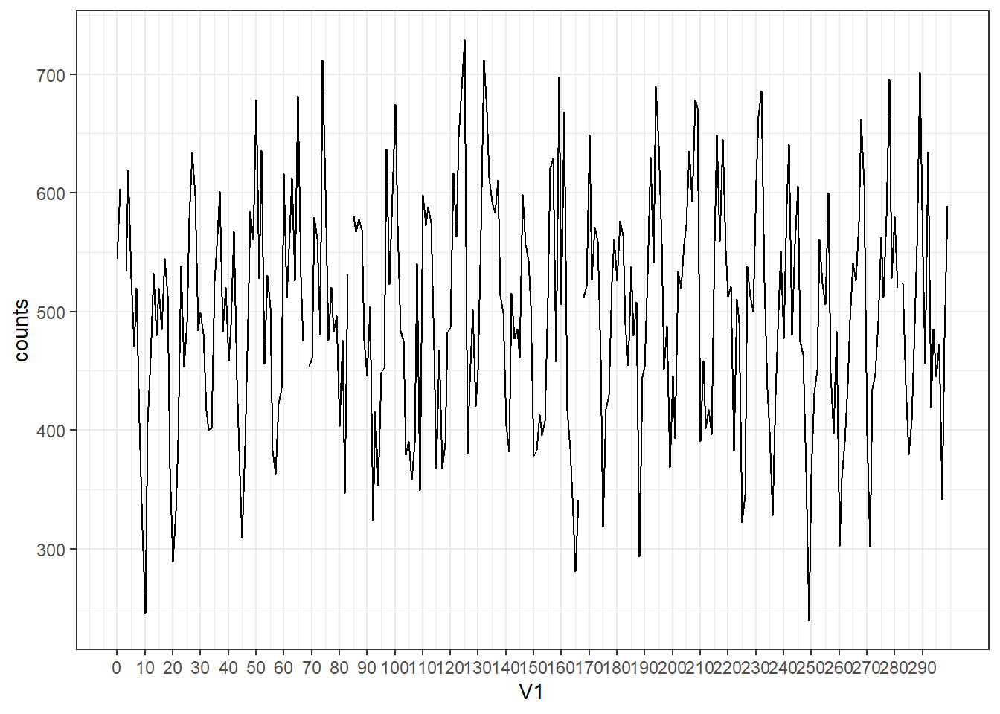
결측치 때문에 그래프 중간 끊기는 지점이 보인다.
2-2번
결측치 처리와 해당 결측치 처리 방식에 대한 논리적 근거를 제시하라.
결측치는 결측치가 발생한 시점과 전 후의 평균 값으로 대신하고자 한다. 단순히 결측치를 없애거나 전체 데이터의 평균 값으로 대체하는 등 여러 방식이 있지만, 시계열로 구성된 현재 데이터에서는 이 방식이 가장 적합하다고 생각한다. 고려 할 앞과 뒤 시점 window는 5로 설정한다.
pacman::p_load(fpp3, seasonal, forecast)
db_2b <- db_2a %>%
recipe(V1 ~ counts) %>%
step_impute_roll(counts, window = 5) %>%
prep() %>% juice()2-3번
계절성을 반영한 시계열 모델을 제시하고 정확도 측면에서 모델 성능을 평가하라.
시계열 분석을 위해 as_tsibble 형태에 맞게끔 데이터를 바꾸어준다.
db_2c <- db_2b %>%
# 열 데이터 만지기
mutate(V2 = floor(V1/12) + 1990,
V1 = rep(1:12, length.out = n())) %>%
mutate(V3 = tsibble::make_yearmonth(year = V2, month = V1),
V1 = NULL, V2 = NULL) %>%
as_tsibble(index = V3)계절성을 반영한 시계열 모델인 Seasonal-ARIMA를 적용하기 위한 과정은 다음과 같다.
- 시간이 지날수록 분산이 커지면 변환(Box-Cox 등) 진행
- 데이터가 정상성을 나타내는지 확인하고 차분 등을 진행
- ACF, PACF 살펴펴봐서 ARMIA(p, d, 0) 또는 ARMIA(0, d, q) 중 적절한 것을 찾음
- 그 외 모형도 적합하고 더 나은 모형을 AICc로 점검
- 잔차의 ACF를 그려보고 검정 확인; 잔차가 특별한 패턴을 보이지 않으면 그 백색 잡음을 예측 값으로 계산
먼저 시간에 따라 분산이 커지지 않아 다른 변환은 하지 않고 시계열이 정상성을 띄는 지를 확인한다(1). 유의확률이 0.01이면 비정상성, 0.1이면 정상성을 띄는 테스트 결과, 이 데이터는 정상성을 띄기에 다른 차분 등 전처리는 하지 않는다(2).
db_2c %>%
features(counts, unitroot_kpss)# A tibble: 1 × 2
kpss_stat kpss_pvalue
<dbl> <dbl>
1 0.0351 0.1ACF, PACF로 ARIMA 후보가 될 것들을 살펴본다.
- ACF가 지수적으로 감소하거나 sin(x) 모양이거나, 2) PACF에서 시차 p가 뾰족한 막대가 유의미하게 있지만 p 이후 없다면 ARIMA(p,d,0)
- PACF가 지수적으로 감소하거나 sin(x) 모양이거나, 2) ACF에서 시차 q에 뾰족한 막대가 유의미하게 있지만 q 이후 없다면 ARIMA(0,d,q)
이 관점에서 이 데이터는 ARIMA(1,0,0)를 기대할 수 있다.
db_2c %>% gg_tsdisplay(y = counts, plot_type = c("partial"), lag_max = 20)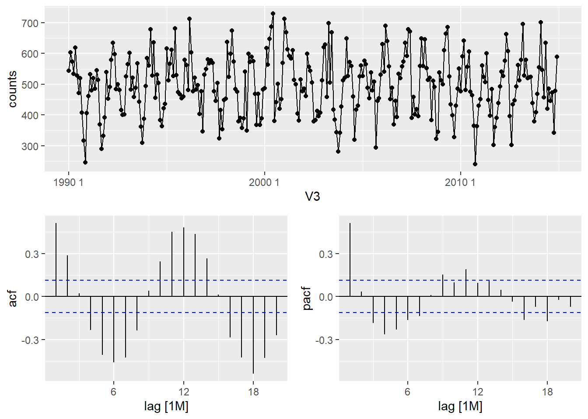
auto.arima로 시계열이 반영된 모형을 찾아보면 ARIMA(1,0,1)(2,1,2)[12]가 최적의 모형으로 나온다.
fit <- auto.arima(db_2c, seasonal = TRUE)
fitSeries: db_2c
ARIMA(1,0,1)(2,1,2)[12]
Coefficients:
ar1 ma1 sar1 sar2 sma1 sma2
0.9000 -0.7956 -0.8680 -0.1652 -0.1831 -0.5755
s.e. 0.0649 0.0858 0.3562 0.0851 0.3562 0.3191
sigma^2 = 4461: log likelihood = -1625.68
AIC=3265.35 AICc=3265.75 BIC=3291두 모형을 비교해본다. 작은 AICc를 가진 자동 모형이 추천한 모형으로 최종 모형을 고른다.
fit2 <- db_2c %>%
model(model1 = ARIMA(counts ~ pdq(1,0,0)),
model2 = ARIMA(counts ~ pdq(1,0,1) + PDQ(2,1,2, period = 12)))
fit2 %>% report()Warning in report.mdl_df(.): Model reporting is only supported for individual
models, so a glance will be shown. To see the report for a specific model, use
`select()` and `filter()` to identify a single model.# A tibble: 2 × 8
.model sigma2 log_lik AIC AICc BIC ar_roots ma_roots
<chr> <dbl> <dbl> <dbl> <dbl> <dbl> <list> <list>
1 model1 4551. -1630. 3271. 3272. 3293. <cpl [25]> <cpl [24]>
2 model2 4461. -1626. 3265. 3266. 3291. <cpl [25]> <cpl [25]>모형의 잔차는 백색잡음에 가까운 것으로 확인된다.
fit2 %>%
select(model2) %>%
gg_tsresiduals()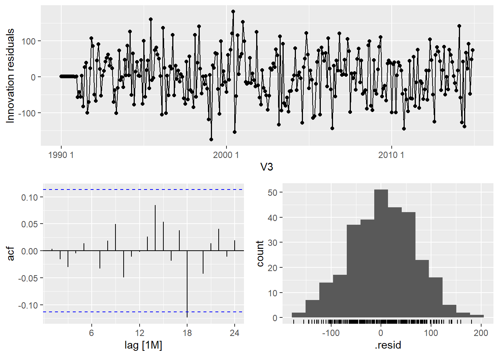
2-4번
분석 결과 활용 가능 여부에 대한 분석 전문가로서의 제안하라.
현재까지 2번에서 한 작업은 관광지 A의 1990년 1월부터 2014년 12월까지 25년 매달 평균 이용객을 모델링 한 것이다. 이 모형은 미래 이용객 수를 예측하거나 계절성 패턴을 이용해 마케팅 전략을 세우는 데 활용할 수 있다.
아래는 미래 5년을 추정한 결과다.
fit2 %>%
select(model2) %>%
forecast(h = 12*5) %>%
autoplot(db_2c) +
labs(
x = "시간(연도 월)", y = "평균 이용객",
title = "관광지 A의 매달 평균 이용객 추이",
subtitle = "파란색은 25년 이용객 추이를 반영한 모형의 추정치")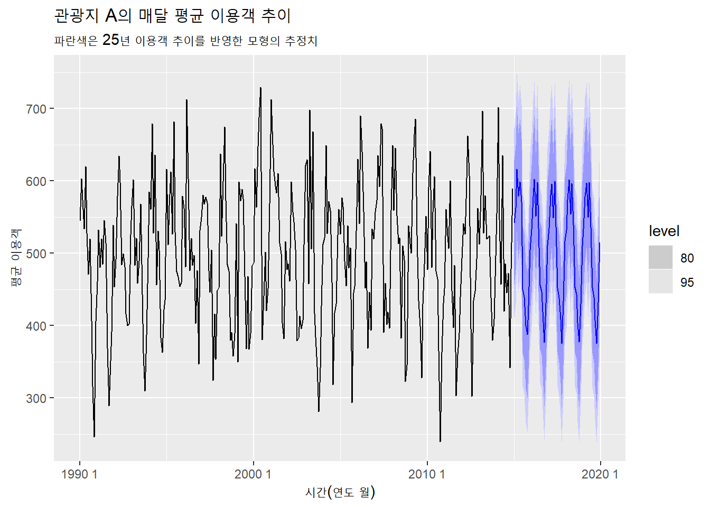
3번
3-1번
서울에서 영동까지 100km/h로 가고 영동에서 서울까지 80km/h로 돌아왔다면, 평균 속도는 어떻게 되는가?
평균 속도는 전체 이동한 거리를 전체 걸린 시간으로 나눈 값이다.
- 서울에서 영동까지 거리를 D로 가정한다면, 이 거리를 100km/h 속도로 가는 데 걸리는 시간은 D/100 시간
- 같은 거리를 80km/h로 돌아오는 데 걸리는 시간은 D/80 시간
- 전체 이동거리는 2D; 서울에서 영동까지 거리의 2배
- 전체 이동 시간은 D/100 + D/80
- 평균 속도는 2D / (D/100 + D/80)
답: 88.89km/h
round(2 / (1/100 + 1/ 80), 2)[1] 88.893-2번
연매출이 3000, 4000, 5000이었다면 연평균 몇 배가 증가한 것인가?
세 연도간 매출이 얼마나 변화했는지는 복합연평균성장률(CAGR)을 활용하면 된다.
- CAGR = (현재 시점 가치 / 과거 시점 가치)^(1 / 총 시점 간격 수) - 1
(5000/3000)^(1/2) - 1[1] 0.29099443-3번
남성, 여성의 등산, 수영에 대한 취미 선호도 빈도표(2x2)를 보고, 남성 중에서 등산을 좋아할 확률을 구하시오.
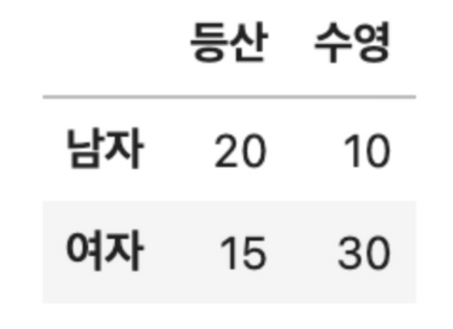
총 남성의 수인 30명 중 등산을 좋아하는 사람은 20명이다. 따라서 2/3 확률로 등산을 좋아한다.
3-4번
표본 10개의 분산이 90일 때 신뢰도 95%로 모분산의 신뢰구간을 추정
표본 분산으로 모분산의 신뢰구간을 추정하는 것은 카이제곱 분포를 활용하면 된다.
- 자유도는 10 - 1 = 9인 카이제곱 분포
n = 10 # 표본 수
s2 = 90 # 표본 분산
alpha = 0.05 # 유의수준
lower_limit <- ((n - 1) * s2) / qchisq(1 - (alpha / 2), n - 1)
upper_limit <- ((n - 1) * s2) / qchisq(alpha / 2, n - 1)
cat("신뢰구간:", lower_limit, ", ", upper_limit) # 결과 출력신뢰구간: 42.58055 , 299.95674번
임상 대상 20명에 대해 혈압약 투약 이전과 이후의 차이가 24, 표준편차 9, 신뢰구간 95%, 차이가 존재하는지 확인하려한다.
4-1번
귀무가설과 연구가설을 제시하시오.
가설은 다음과 같다.
- 귀무가설: 혈압약 투약 이전과 이후의 차이가 같다.
- 연구가설: 혈압약 투약 이전과 이후 차이가 다르다.
4-2번
검정 후 귀무가설 기각 여부 제시하라.
일표본 t-test 검정 결과, 유의확률이 005 이하이므로 혈압차이가 통계적으로 유의미하며, 귀무가설을 기각한다.
t_value <- (24) / (9 / sqrt(20))
df <- 20 - 1
# 양측 p-value 계산
p_value <- 2 * (1 - pt(abs(t_value), df))
p_value[1] 2.877254e-105번
problem5.csv는 공장 X, Y, Z의 평균 출하 소요시간을 여러 일자에 거쳐 측정한 데이터이다. 각 공장의 중위수의 차이가 존재하는지 확인하려 한다.
5-1번
연구가설과 귀무가설을 설정하시오.
- 가설은 다음과 같다.
- 귀무가설: 세 공장의 평균 출하 소요 시간의 중위수는 같다.
- 연구가설: 세 공장 중 적어도 한 공장의 평균 출하 소요 시간의 중위수는 다른 공장의 중위수와 다르다.
5-2번
검정통계량을 구하고 가설을 채택하시오.
공장 평균 출하 소요시간 데이터는 각 공장별로 약 15개며, 정규성을 띄지 않으므로 비모수 검정을 실시한다.
db_5a <- data.table(fread("test/25/problem5.csv"))
setnames(db_5a, c("출하 소요시간", "공장명", "공장별 출하 소요시간 순위"),
c("time", "factory", "time_rank"))
db_5a[, .N, factory] factory N
1: Z 14
2: X 15
3: Y 15shapiro.test(db_5a$time)
Shapiro-Wilk normality test
data: db_5a$time
W = 0.97563, p-value = 0.4693세 집단의 중위수 비교하는 kruskal.test를 수행한 결과, p-value가 0.6971로 유의 수준인 0.05보다 높아 각 공장의 출하 소요시간 중위수에는 유의미한 차이가 없다고 판단된다.
kruskal.test(data = db_5a, time ~ factory)
Kruskal-Wallis rank sum test
data: time by factory
Kruskal-Wallis chi-squared = 0.72179, df = 2, p-value = 0.69716번
1개년 50억원, 2개년 60억원, 3개년 70억원의 예산을 가지고 NPV(순현재가치)가 가장 높아지는 안을 제시하라.
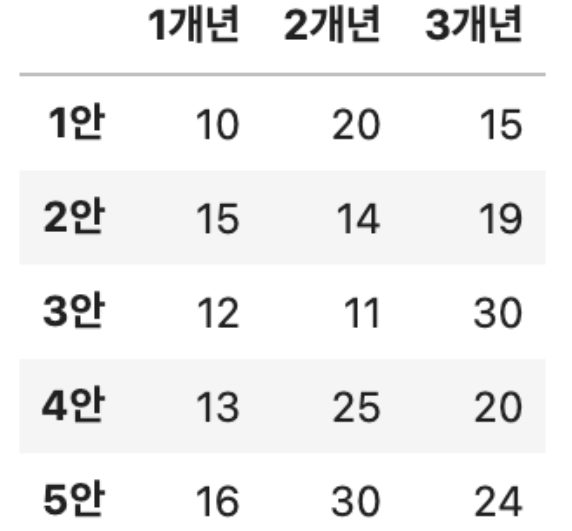
20 + 14+11+25+30[1] 100